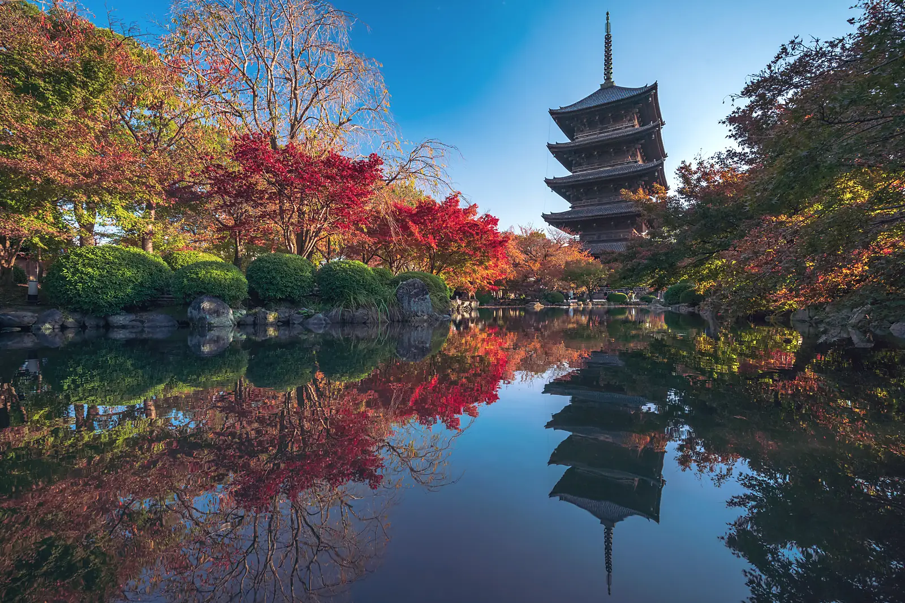

Eighteen photographs · five regions
From the road
The mornings we plan the tours around. Most of these were taken before eight o’clock, which is the point.
See it yourself
Pick the season,
Pick the season,
we’ll pick the hour
Every photograph here is on an itinerary. Eight tours, fixed dates, twelve seats each.
- AutumnKyoto in Autumn · Fuji & the Five Lakes · Hiroshima
- WinterSnow Country · Onsen & Ryokan Retreat · Tokyo After Dark
- SpringSakura Season · The Golden Route · Hiroshima